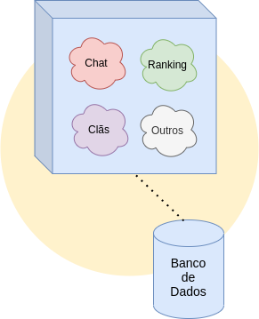

Hello,
My name is Luan! I use this space to create my slides. Press [space] to see my presentatios.

O que existe por trás de um jogo?
Agenda
Micro serviços
Separando jogos em serviços.Infraestrutura
Cloud, contêineres e outros conceitos.Orquestração
Gerenciando muitos contêineres.Partes essenciais
Pitaya e Maestro.Problemas e soluções
Alguns desafios interessantes.Data, Backend e Infra
Alguns times no backstage.
Micro serviços
Separando jogos em serviços.Criando um jogo no modo roots
Todas funcionalidades do jogo são implementadas no mesmo projeto, por exemplo, os sistemas de clãs, ranking e chat. Chamamos esse tipo de arquitetura de monolito.

Muitos jogos, muitos problemas
Apesar das vantagens de ser uma arquitetura mais simples, os monolitos tornam-se o epicentro de grandes problemas com o crescimento das organizações e de seus produtos.

Serviços especializados
As funcionalidades em comum com demais jogos são identificadas e separadas em novos projetos, tornando-se serviços que podem ser utilizados por todos os jogos, sem que estes tenham que refazer toda a lógica.

Como integrar tudo isso?
Vamos falar de infraestrutura.
Infraestrutura
Cloud, contêineres e outros conceitos.O que é cloud computing?
Cloud computing ou computação em nuvem é a entrega da computação como um serviço ao invés de um produto, onde recursos compartilhados, software e informações são fornecidas, permitindo o acesso através de qualquer computador, tablet ou celular conectado à Internet.
O que é uma plataforma de cloud?
São recursos e serviços oferecidos por empresas especializadas em computação em nuvem. Esses produtos vão de tecnologias de infraestrutura, como computação, armazenamento e bancos de dados, a tecnologias emergentes como machine learning e Internet das Coisas.

Onde ficam os servidores de jogos?
Em máquinas virtuais fornecidas por plataformas como Amazon Web Services e Google Cloud Platform.

Como distribuir tantos serviços?
Existem várias maneiras de se empacotar e distribuir softwares. Uma das mais utilizadas para serviços são os contêineres Linux.
Um container pode ser entendido como um conjunto de processos que são isolados do resto do sistema. Todos arquivos necessários para executar esse sistema isolado são definidos por uma imagem, garantindo portabilidade e consistência.

Rodando jogos na nuvem
Após fazer o upload das nossas imagens para algum registry, podemos baixá-las e executá-las em máquinas virtuais nas plataformas de nuvem. Assim, através de pontos de acesso públicos, os usuários podem acessar nossos serviços através da Internet em seus dispositivos pessoais.

Muitos contêineres, muitos problemas
Como gerenciar centenas de projetos rodando em milhares de contêineres?

Orquestração
Gerenciando muitos containers.Orquestradores de contêineres
As ferramentas de orquestração de contêineres também são aplicações em nuvem que facilitam o gerenciamento de múltiplos contêineres. Seus principais objetivos são:
- 1. Gerenciar o ciclo de vida dos contêineres de forma autônoma;
- 2. Gerenciar volumes e rede.


Kubernetes
Também conhecido como K8s, é um sistema de código aberto para automatizar a implantação, escalonamento e gerenciamento de aplicações em contêineres.
Partes essenciais
Pitaya e Maestro.
Pitaya
Pitaya é um framework para construção de servidores de jogos, simples, rápido, leve e com bibliotecas de cliente para iOS, Android, Unity e outros.

Maestro
Maestro é um sistema utilizado para controlar as salas de jogos no Kubernetes. Funciona mantendo um conjunto de salas de jogo, aumentando ou diminuindo sua escala com base nas regras fornecidas pelo desenvolvedor.
Problemas e soluções
Alguns desafios interessantes.Latência
Como reduzir a latência em jogos com escalas mundiais?
Kubernetes pelo mundo
Para reduzir a latência média dos usuários, existem vários clusters Kubernetes com suas respectivas salas de jogos que atendem os usuários mais próximos.
Essa malha global de serviços é interligada por meio de tecnologias de rede modernas, que permitem que essas regiões conversem entre si.

Data, Backend e Infraestrutura
Alguns times no backstage.Obrigado
luan.guimaraes@wildlifestudios.com